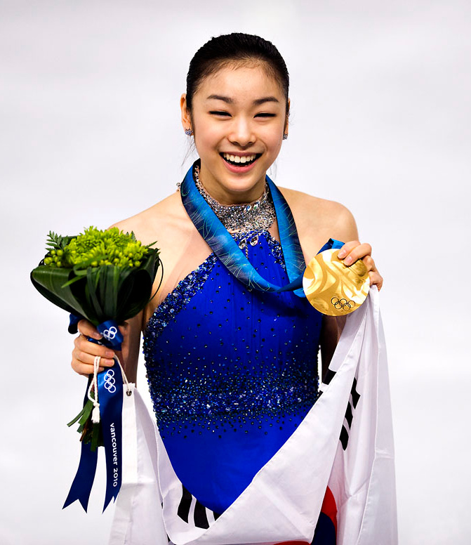

Idol
- 김연아
- 엠마 왓슨
대한민국의 前 피겨 스케이팅 선수로 2010 밴쿠버 동계올림픽 피겨 스케이팅 여자 싱글 금메달리스트이자 2014 소치 동계올림픽 피겨 스케이팅 여자 싱글 금은메달리스트이다.

현역 활동 당시 데뷔부터 은퇴까지 최정점에 있었던 선수로서 세계신기록만 11회 경신한 압도적인 스케이터이다. 별명은 그에 맞는 피겨 여왕, 연느님이며(Queen Yu-Na) 여자 피겨 역사상 최고의 선수 중 한 명이다.[4]
2009 피겨 세계선수권에서 여자 선수 최초로 200점을 돌파하면서 압도적인 기록으로 우승을 차지하자 미국의 유니버설 스포츠 메인페이지에 "Long live the Queen!"이라는 문구가 김연아의 사진과 함께 크게 실리는가 하면, AP통신은 "경쟁이기보다는 즉위식에 가까웠다"고 전했다.